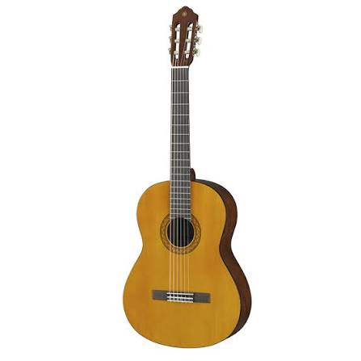
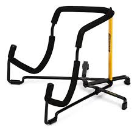

Como elegir tu primera guitarra
Elegir una guitarra por primera vez puede ser dificil En este articulo te contamos algunos aspectos importantes que debes considerar antes de comprar tu primer instrumento
Leer masEncuentra consejos, recomendaciones y novedades sobre instrumentos musicales y equipos de audio

Elegir una guitarra por primera vez puede ser dificil En este articulo te contamos algunos aspectos importantes que debes considerar antes de comprar tu primer instrumento
Leer mas
Mantener tus instrumentos en buenas condiciones permite prolongar la vida util y conservar una buena calidad de sonido conoce algunos consejos para su cuidado y mantenimiento
Leer mas